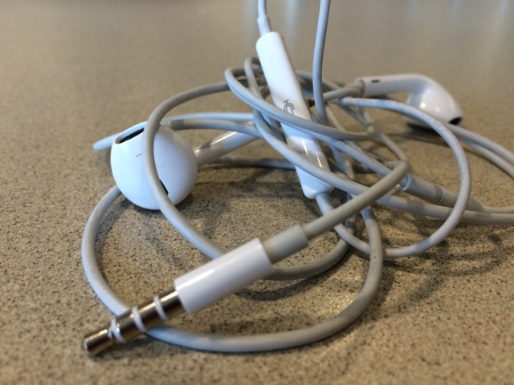
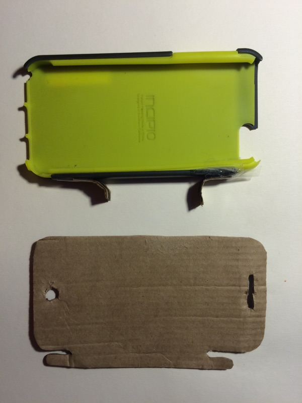

WEEK 2 - Tangled Earbuds
PROBLEM: Everytime people take ear buds out of their pockets or backpacks the headphones are always tangled.

Observation & Thoughts
- I noticed that no matter what I did if ear buds were in my pocket for longer then 10 min of moving around they always got tangled. this lead me to observe that many other people had this same problem.
- What is the cause of this problem, why does it happen so often?
- Why does it only happen to ear buds?
- Is there current effective solutions that can be modeled to be effective in this case?
Research Findings
- The longer the length of cable the higher chance of cables tangling.
- Earbuds tangle more then 50% of the time
- Most solutions already used to solve this problem include a seperate piece of material to wrap the earbuds around to prevent tangling. This createa another item for people to carry in their already full pockers.
- 87% of iphone users use a case and 75% of overall mobile phone owners use a case.

After vaccuming today I saw how vaccums wrapped the cord on the side of the body.....which lead me to think if there was a way to use that sort of approach for the problem of headphones.
Sketching


Rapid Prototyping
I wanted to quickly produce a mockup prototype to test out how my solution could work.


Solution - A phone case where the corners flip out to allow the user to wrap their headphones around the flaps.
This would allow people to always have something to wrap their earbuds around that is not a seperate peice from the phones itself. This would be a logically choice to seeing as 75% of mobile phone users have phone cases. The ability to flip the tabs back into the case is also important for the user who does not always have their headphones with them.